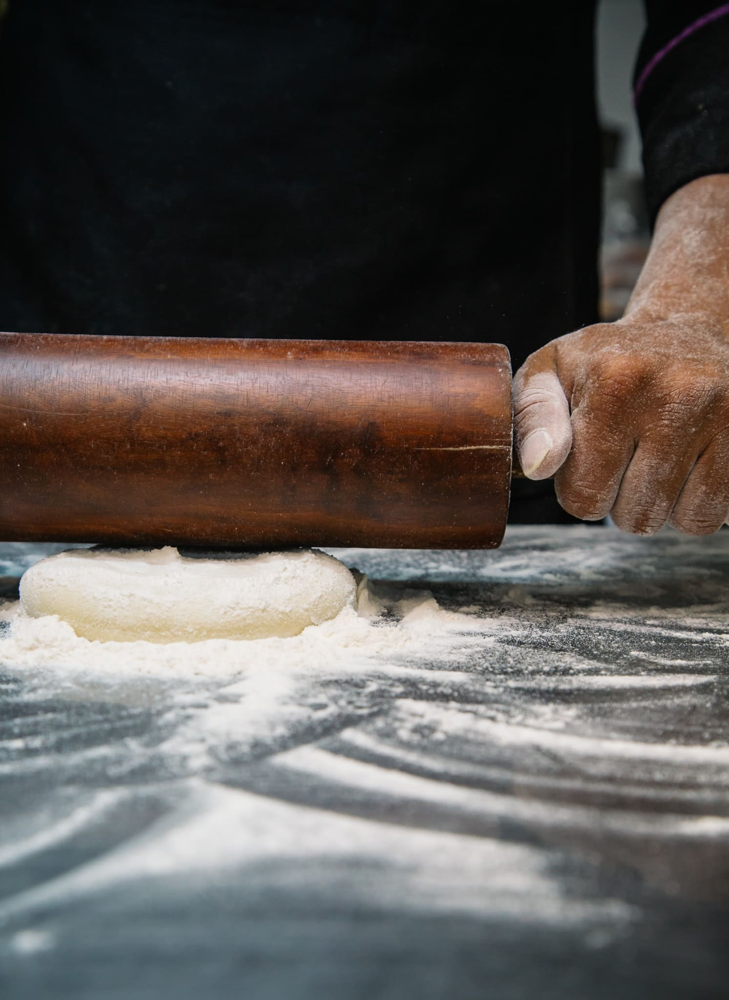

200 g de azúcar (mejor a partes iguales azúcar moreno y azúcar blanquilla)
150 g de pepitas de chocolate que estén muy frías, unas horas en el congelador o la nevera (puedes añadir también un puñado de nueces picadas)
2 huevos
1 pizca de sal
Una cucharadita de levadura química en polvo
1/3 tazas de leche de almendra
1 cucharada de vainilla en polvo o de esencia de vainilla
Preparación:
Precalienta el horno a 190 ºC.
En el bowl bate la mantequilla con el azúcar hasta tener una crema, agrega la vainilla y los huevos. Vuelve a batir hasta que se integre todo y entonces incorpora las chips de chocolate (o chocolate picado a cuchillo pero que esté muy frío), mezclando bien.
Tiene que quedar una masa compacta y moldeable con aspecto de migas.
Forma unas bolitas y las aplastas con la mano. Puedes darles el tamaño que quieras. Para un tamaño medio, forma bolitas como una pelota de ping pong. Tienes que distribuirlas en una bandeja engrasada, dejando espacio entre ellas porque crecen bastante. Dales forma con las manos húmedas o con una cucharada para que queden regulares.
Hornea por 10 minutos a 180° C.
Saca del horno y deja enfriar por 5 minutos y listas para disfrutar.

Tips
Añadiendo a la mezcla un par de cucharadas de cacao en polvo, coco rallado o café soluble tenemos distintas variedades de cookies.
Se conservan mucho tiempo en un recipiente hermético.
Podes elegir otros toppings como rocklets, chocolate blanco o granas de distintos colores.